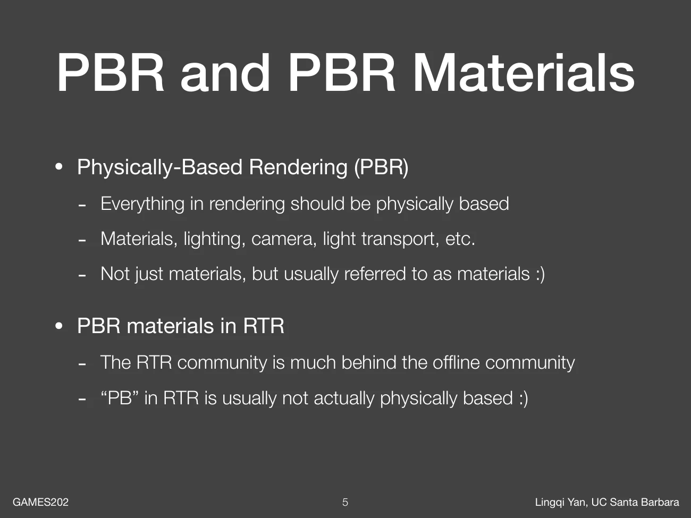
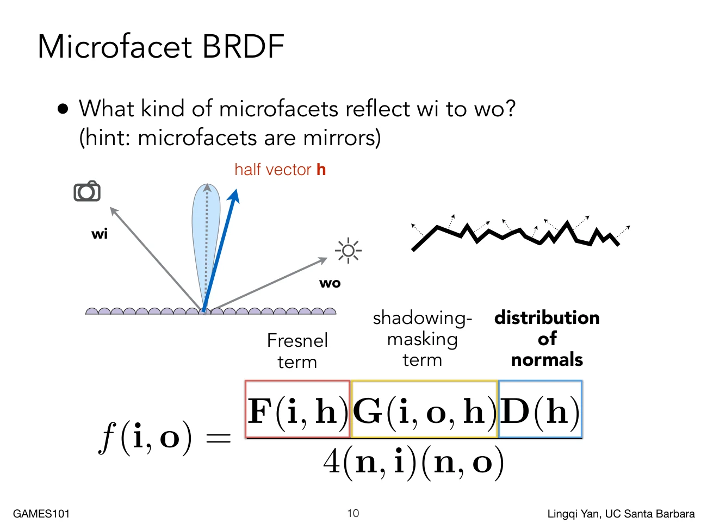
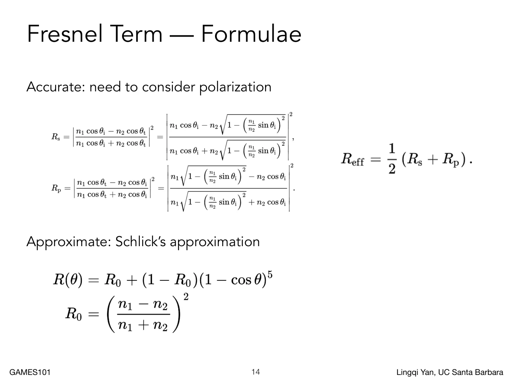
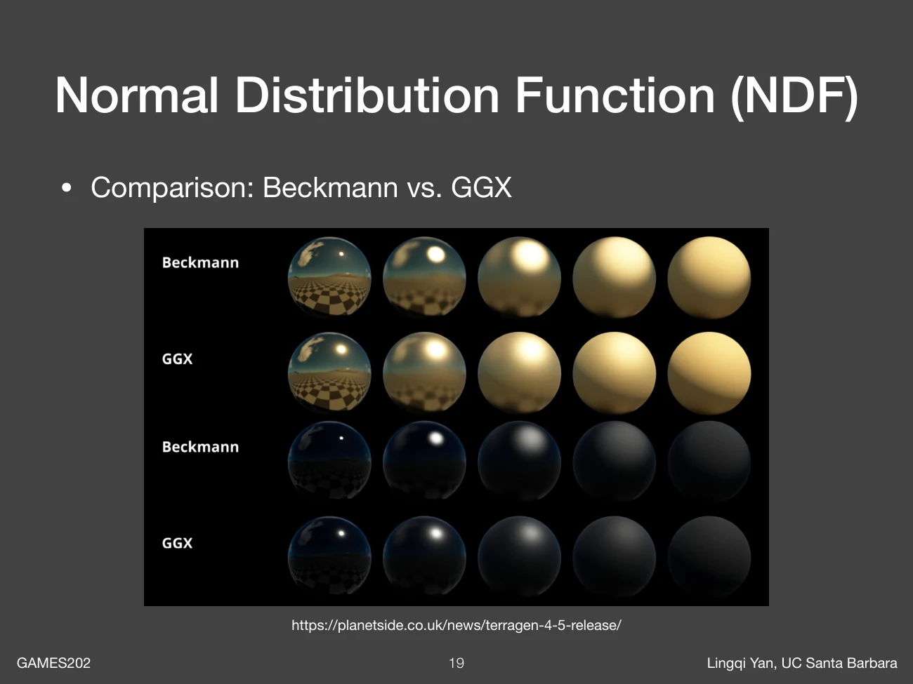
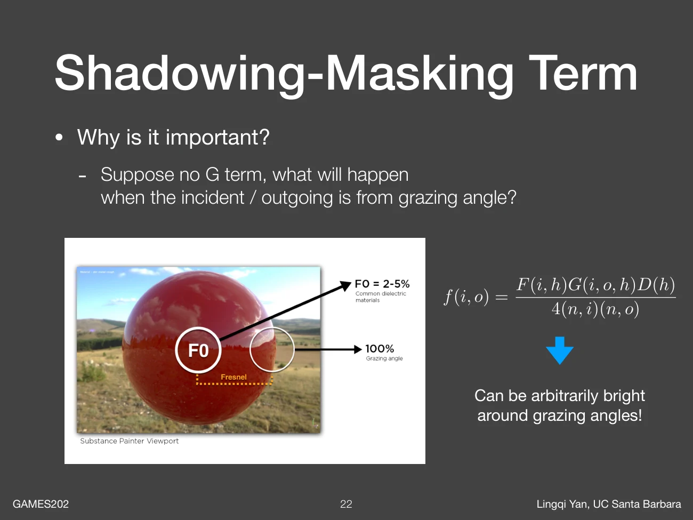
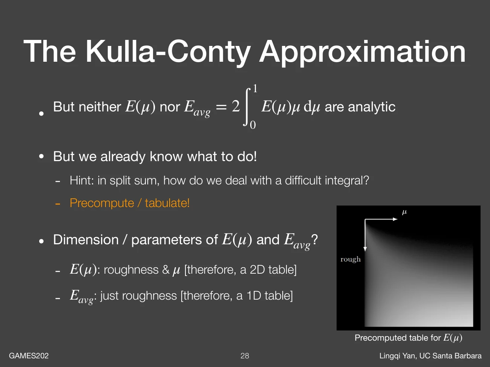
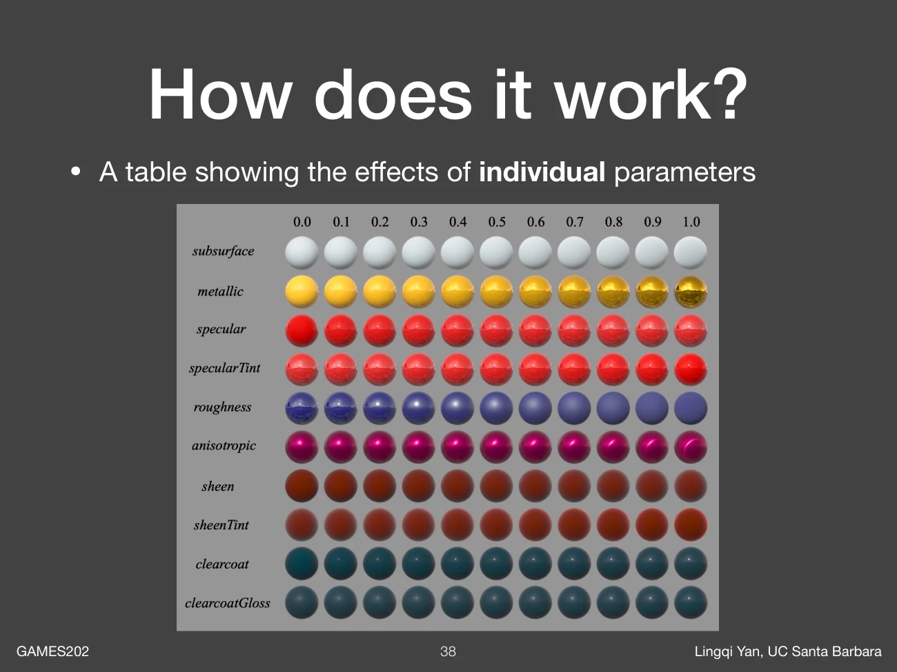
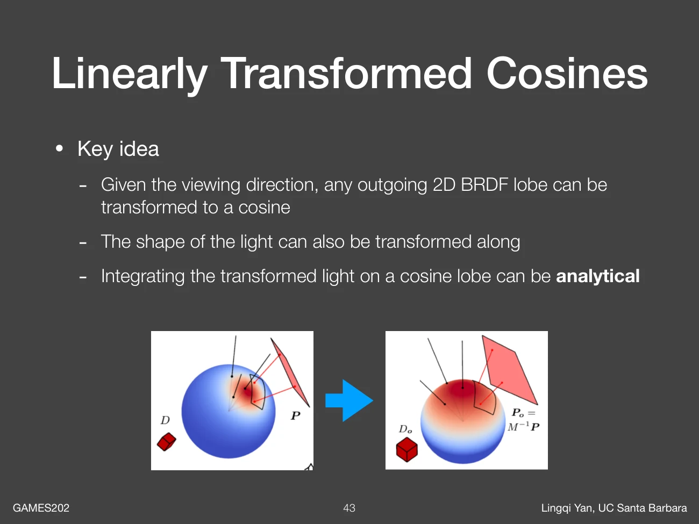

第 10 讲：实时物理材质（一）——微表面模型与 Disney BRDF
拆解实时渲染里“PBR 材质”到底由哪些项组成：微表面 BRDF 的 F/D/G、能量补偿，以及艺术家友好的 Disney 原则化 BRDF。
◆ 学完这一讲，你应该能
能写出微表面 BRDF 的完整形式，并解释 F、D、G 三项各自负责什么物理现象
能说明 Beckmann 与 GGX 两种 NDF 的差别，以及为什么 GGX 在实时渲染里更常用
能解释为什么缺少 G 项会在掠射角出现异常高亮，Smith 模型如何解耦 shadowing 与 masking
能说清单次散射微表面模型为什么会丢能量，Kulla-Conty 近似如何用预计算表补回多次反弹
能列举 Disney 原则化 BRDF 的设计原则，并说明它“不是物理正确但可用”的原因
能概述 LTC 解决什么问题：多边形光源下 GGX 的解析着色
核心结论速记
实时渲染里的“PBR 材质”通常只是微表面模型 + Disney BRDF，而且很多实现并不真正物理正确。
微表面 BRDF 把表面看成大量朝向随机的微小镜面，只有法线恰好等于半程向量 h 的微表面才能把 wi 反射到 wo。
完整形式为 f(i,o)=F(i,h)G(i,o,h)D(h)/(4(n·i)(n·o))，其中 F 是菲涅尔、D 是法线分布、G 是阴影遮蔽项。
D 项决定高光的“聚拢/散开”：Beckmann 像高斯、GGX 有长尾，长尾让高光边缘更自然，所以 GGX 成为实时主流。
G 项不可省：没有它，掠射角的分母 (n·i)(n·o) 趋近 0 会让 BRDF 任意亮；Smith 模型把 shadowing 与 masking 拆开处理。
单次散射微表面模型在粗糙度高时明显丢能量，Kulla-Conty 用预计算的 E(μ) 与 E_avg 表补一个多次反弹的附加 lobe。
Disney 原则化 BRDF 用少量 0~1 的直觉参数覆盖大量材质，牺牲物理正确换可控性，是实时与离线都广泛使用的“PBR”外观模型。
LTC 把 GGX 的 BRDF lobe 线性变换成余弦 lobe，从而让多边形光源下的积分有解析解，但不处理阴影。
011. 实时渲染里的“PBR 材质”到底是什么
这一讲开场先给“PBR”祛魅。物理基于渲染（Physically-Based Rendering, PBR） 的本意是整条渲染管线都物理基于：材质、光源、相机、光传输都遵守物理规律。但在实时渲染（RTR）社区，大家口中的“PBR 材质”往往只是指表面着色模型，而且和离线渲染相比明显落后。
课件给了一个很直白的判断：实时里的“PB”通常并不是真的物理基于。表面材质基本就两类东西：
- 微表面模型（microfacet models）：常被用错，所以严格说并不 PBR；
- Disney 原则化 BRDF（Disney principled BRDF）：对艺术家友好，但同样不是物理正确。
体渲染方面（云、头发、皮肤）则主要是快速近似的单次散射与多次散射。课件强调：实时 PBR 通常没有太多新理论，而是大量实现层面的 hack，性能（速度）才是关键因素。
所以这一讲的目标不是教你“物理”，而是教你“实时里大家实际在用的那套东西长什么样、哪里不物理、为什么还能用”。

常见坑
把引擎里勾了“PBR”的材质当成物理正确 → 实时实现大量近似与 hack → 判断材质是否可信要看具体 BRDF 项与能量是否守恒，而不是看标签。
UE / Unity 落地
UE 的材质里 Metallic/Roughness/Specular 这套输入对应的是实时近似 PBR，不是严格物理量；调参时把它当“外观控制”而不是“物理仿真”。
Unity 的 Standard/URP Lit 材质同样基于近似微表面 + 经验项，文档里也明确说明是近似模型。
022. 微表面 BRDF：只有法线对准半程向量的微表面才反光
微表面模型的核心图像：宏观表面由无数微小镜面组成，每个微表面都是完美镜面。给定入射方向 \(\mathbf{i}\) 与出射方向 \(\mathbf{o}\)，只有法线恰好等于半程向量（half vector） \(\mathbf{h}=\frac{\mathbf{i}+\mathbf{o}}{\|\mathbf{i}+\mathbf{o}\|}\) 的那些微表面，才能把光从 \(\mathbf{i}\) 镜面反射到 \(\mathbf{o}\)。
于是 BRDF 写成三项的乘积：
\[ f(\mathbf{i},\mathbf{o})=\frac{F(\mathbf{i},\mathbf{h})\,G(\mathbf{i},\mathbf{o},\mathbf{h})\,D(\mathbf{h})}{4(\mathbf{n}\cdot\mathbf{i})(\mathbf{n}\cdot\mathbf{o})} \]
三项各管一件事：
- 菲涅尔项（Fresnel term） \(F(\mathbf{i},\mathbf{h})\)：这个微表面反射多少、折射（吸收）多少，随入射角变化；
- 法线分布函数（Normal Distribution Function, NDF） \(D(\mathbf{h})\)：有多少比例的微表面法线朝向 \(\mathbf{h}\)；
- 阴影遮蔽项（shadowing-masking term） \(G(\mathbf{i},\mathbf{o},\mathbf{h})\)：微表面之间互相遮挡的比例，shadowing 对应光源方向、masking 对应眼睛方向。
分母 \(4(\mathbf{n}\cdot\mathbf{i})(\mathbf{n}\cdot\mathbf{o})\) 来自立体角与投影的几何换算，不是随手写的归一化。记住这个结构，后面每一项都是在这上面做文章。

常见坑
把 h 算成 i 与 o 的平均但没归一化 → 高光位置偏移、亮度异常 → 用 normalize(i+o)。
把分母的 4 漏掉或写成 (n·i)(n·o) → 整体亮度差常数倍，与其他材质对不上 → 对照标准公式检查。
UE / Unity 落地
UE 的材质节点里若手写微表面 BRDF，通常用
GBuffer里的 Roughness 驱动 D 项、用 F0/Metallic 驱动 F 项；引擎内置的Default Lit已经把这些项封装好。Unity 的 URP Lit 在 Shader 里同样按 F·D·G/(4·n·l·n·v) 组织，自定义 Shader 时可以对照其
Lighting.hlsl。
033. 菲涅尔项：为什么边缘总是更亮
菲涅尔项描述“反射率随入射角变化”。课件给的例子是：反射率随掠射角增大而增大——这就是为什么你斜着看水面、看桌面时边缘反光更强。严格计算要考虑光的偏振，实时里一般用 Schlick 近似：
\[ F(\mathbf{i},\mathbf{h}) \approx F_0 + (1-F_0)(1-\mathbf{i}\cdot\mathbf{h})^5 \]
其中 \(F_0\) 是垂直入射时的反射率。课件分别给了电介质（dielectric） 与导体（conductor） 两种情况：电介质的 \(F_0\) 很小（例如玻璃约 0.04），掠射角才明显变亮；导体的 \(F_0\) 可以很大且带颜色（金、铜），所以金属的高光本身就有颜色。
工程上记住两点：
- 非金属的 \(F_0\) 基本固定在 0.04 附近，金属的 \(F_0\) 用材质颜色；
- Schlick 只是近似，掠射角极端时会有偏差，但实时里够用。

常见坑
把金属的 F0 也设成 0.04 → 金属高光没有颜色、看起来像塑料 → 金属的 F0 应取基础色（albedo）。
Schlick 里用 n·i 而不是 i·h → 曲线形状不对、边缘过亮 → 菲涅尔看的是微表面法线与入射的夹角，用 i·h。
UE / Unity 落地
UE 的 Metallic 输入本质就是控制 F0：Metallic=1 时 F0 取 BaseColor，Metallic=0 时 F0≈0.04。
Unity URP Lit 的
_SpecColor/Metallic 工作流同理，金属度贴图就是把 F0 在 0.04 与 albedo 之间插值。
044. 法线分布 D：Beckmann 与 GGX 的差别
NDF 描述微表面法线的分布：越集中越像镜面（glossy），越分散越像漫反射（diffuse）。注意它和统计学里的正态分布没有关系，只是形状上像。
课件给了两种常用模型：
- Beckmann NDF：类似高斯，但定义在斜率空间（slope space），形式大致是 \(D(\mathbf{h}) \propto \exp\big(-\tan^2\theta_h/\alpha^2\big)/\cos^4\theta_h\)，其中 \(\theta_h\) 是 h 与 n 的夹角，\(\alpha\) 是粗糙度（越小越像镜面）。
- GGX（Trowbridge-Reitz）：典型特征是长尾（long tail），即高光核心之外还有一段缓慢衰减的拖尾，让高光边缘更柔和自然，因此成为实时渲染的主流。
课件还提到 GGX 的扩展 GTR（Generalized Trowbridge-Reitz），尾可以更长，用来拟合更复杂的材质。
实践上：粗糙度参数不是线性的，Beckmann 与 GGX 在同一粗糙度数值下外观差别很大；换模型要重新调参。

常见坑
把粗糙度当线性参数直接映射到 α → 低粗糙度区间变化过陡、高粗糙度区间又太平 → 引擎里通常对粗糙度做重映射（如 α=roughness²）。
换 NDF 模型不重新调粗糙度 → 同一数值下高光大小完全变了 → 换模型必须重调。
UE / Unity 落地
UE 与 Unity 的实时管线默认都用 GGX 类 NDF，材质里的 Roughness 输入最终会映射到 α。
UE 的
Subsurface/Clear Coat等复杂材质底层仍是 GGX 的变体或叠加，不是换了一套理论。
055. 阴影遮蔽项 G：没有它，掠射角会亮到离谱
G 项负责微表面之间的自遮挡：shadowing 是光源方向被挡，masking 是眼睛方向被挡。课件用一个反例说明它为什么不能省：如果去掉 G，当入射或出射接近掠射角时，分母 \((\mathbf{n}\cdot\mathbf{i})(\mathbf{n}\cdot\mathbf{o})\) 趋近 0，BRDF 可以任意亮，画面会出现一圈不该有的亮边。
常用的 Smith 阴影遮蔽项 把 shadowing 与 masking 解耦成两个独立函数的乘积（各自只依赖一个方向），既好算又物理上可接受。
工程直觉：G 项在正面观察时接近 1，在掠射角时把能量压下去，所以它主要影响物体轮廓边缘的亮度。

常见坑
为了省性能把 G 设成常数 1 → 轮廓边缘出现亮边、能量不守恒 → 至少用 Smith 的近似式。
Smith 的 G 里方向向量没归一化 → 遮挡比例算错 → 所有方向向量先 normalize。
UE / Unity 落地
UE/Unity 内置光照都带 Smith 类 G 项，自己写 Shader 时不要图省事省略。
若在 UE 里用
Unlit手搓高光，最容易漏掉的就是 G 与分母，导致边缘过曝。
066. 多次反弹与 Kulla-Conty 能量补偿
单次散射的微表面模型只算了一次“光打到微表面再离开”，但真实表面在粗糙度高时，光会在微表面之间多次反弹。只算一次就会丢能量，粗糙度越高越明显（因为遮挡与反弹机会更多），表现为材质发暗、发灰。
精确补能量有方法（Heitz 等），但实时太慢。Kulla-Conty 近似的思路是：被遮挡等价于发生下一次反弹，于是设计一个附加的 BRDF lobe 把丢掉的能量补回来。
关键量是出射方向的整体能量 \(E(\mu_o)\)（\(\mu=\sin\theta\)），以及它的平均 \(E_{avg}=\int E(\mu)\mu\,d\mu\)。附加项大致正比于 \((1-E(\mu_i))(1-E(\mu_o))\)，这样它积分的能量正好补上缺口，并且满足互易性。
\(E(\mu)\) 与 \(E_{avg}\) 都没有解析解，但课件提醒：和 split sum 一样，预计算查表。\(E(\mu)\) 依赖粗糙度与 \(\mu\)，是一张 2D 表；\(E_{avg}\) 只依赖粗糙度，是一张 1D 表。
如果 BRDF 带颜色，颜色等价于吸收、也就是能量损失，需要再乘一个由平均菲涅尔 \(F_{avg}\) 推出的颜色项。

常见坑
只补亮度不补颜色 → 有色材质多次反弹后颜色偏移 → 颜色项要乘 F_avg 推出的系数。
把 E 表按线性粗糙度采样 → 低粗糙度区间精度不够 → 按引擎的粗糙度重映射后再查表。
UE / Unity 落地
UE 的
Default Lit在粗糙度高时已有能量补偿的近似；自己写 Shader 时若发现粗糙材质偏暗，先怀疑漏了多次反弹项。Unity 的 HDRP 也有类似的 energy compensation 选项，URP 相对简化。
077. 一个不该学的 hack：微表面 + 漫反射直接相加
课件专门用一页“骂”了一个在计算机视觉里被广泛使用的做法：把微表面 BRDF 和一个漫反射 lobe 直接相加。课件原话很重：完全错误、不能更糟、我从没教过你这么干。
问题有两个：
- 物理不正确：微表面模型本身已经包含了“没被反射的能量会进入表面”的含义，再额外加一个漫反射项等于凭空造能量；
- 不满足能量守恒：相加后总能量可能超过 1（Kulla-Conty 那类方法才是在正确地补能量）。
工程上要知道：很多旧教程、旧 Shader 确实这么写，看起来“也还行”，但粗糙度一高、光照一强就会过曝。正确做法是用能量守恒的框架（如 Kulla-Conty）或直接使用引擎内置的完整 BRDF。
常见坑
照抄网上“高光+漫反射”的简单 Shader → 高粗糙度或强光下过曝 → 改用带能量补偿的完整模型。
UE / Unity 落地
UE/Unity 内置材质不会做这种直接相加，自己扩展时也不要退回这种写法。
088. Disney 原则化 BRDF 与 LTC 一览
Disney 原则化 BRDF（principled BRDF） 的动机很实际：没有哪个物理模型能很好地表示所有真实材质（多数微表面模型还缺漫反射项），而且物理参数对艺术家不友好（比如“复折射率 n-ik”）。它的高层目标是可艺术指导，而不必物理正确——但在实时渲染里它照样被叫作 PBR。
“原则化”体现在几条设计原则上：参数要直觉而非物理；参数尽量少；参数在合理范围内取 0~1；允许在合理时超出范围；所有参数组合都要尽量稳健、看起来合理。课件用一张表展示每个参数单独作用的效果。
它的优缺点：好懂好控、一个模型覆盖大量材质、有开源实现；但不物理基于、参数空间巨大。
最后课件引出 线性变换余弦（Linearly Transformed Cosines, LTC）：它解决微表面模型（主要是 GGX）在多边形光源下的着色——给定观察方向，任何出射 2D BRDF lobe 都可以线性变换成余弦 lobe，光源形状也随之变换，而余弦 lobe 上的积分有解析解。注意它不处理阴影。


常见坑
把 Disney 参数当物理量去反推折射率 → 它本来就不是物理参数 → 按外观调，不要做物理推导。
以为 LTC 能处理阴影 → 它只解决积分，不解决遮挡 → 阴影要另做。
UE / Unity 落地
UE 的
Subsurface Profile、Clear Coat等复杂材质在思路上受 Disney 原则化参数影响：用少量直觉参数覆盖多种外观。Unity 的 HDRP 材质参数（如 Smoothness、Specular）同样走“艺术家友好”路线，而不是暴露折射率。
引擎对照表
| 概念 / 效果 | Unreal Engine | Unity |
|---|---|---|
微表面 BRDF 的 F/D/G 三项 | Default Lit 材质内部实现，Roughness 驱动 D、Metallic 驱动 F | URP/HDRP Lit 的 Lighting.hlsl 中同结构 |
菲涅尔 F0 | Metallic=1 时 F0=BaseColor，否则≈0.04 | Metallic 工作流下 SpecColor 与 albedo 插值 |
GGX 长尾高光 | 默认 NDF，Roughness 映射到 α | URP Lit 默认 GGX 类 NDF |
多次反弹能量补偿 | Default Lit 在高粗糙度下有近似补偿 | HDRP 有 energy compensation 选项 |
Disney 原则化参数 | Subsurface/Clear Coat 等复杂材质的参数思路 | HDRP 材质参数走艺术家友好路线 |
LTC 多边形光源着色 | Rect Light 的解析着色在概念上对应 LTC 思路 | HDRP 的 Area Light 使用类似解析积分 |
术语双语表
| English | 中文 | 说明 |
|---|---|---|
| Microfacet BRDF | 微表面 BRDF | 把表面看成大量微小镜面，只有法线等于半程向量的微表面才反光。 |
| Half vector | 半程向量 | 入射与出射方向的角平分方向 h=normalize(i+o)。 |
| Fresnel term | 菲涅尔项 | 反射率随入射角变化，掠射角更大；实时常用 Schlick 近似。 |
| Normal Distribution Function (NDF) | 法线分布函数 | 描述微表面法线朝向 h 的比例，决定高光聚拢或散开。 |
| GGX / Trowbridge-Reitz | GGX 分布 | 带长尾的 NDF，实时渲染主流选择。 |
| Shadowing-masking term | 阴影遮蔽项 | 微表面自遮挡比例，Smith 模型把两个方向解耦。 |
| Kulla-Conty approximation | Kulla-Conty 近似 | 用预计算表补回多次反弹丢失的能量。 |
| Disney principled BRDF | Disney 原则化 BRDF | 少量 0~1 直觉参数覆盖大量材质，艺术家友好但不物理正确。 |
| Linearly Transformed Cosines (LTC) | 线性变换余弦 | 把 BRDF lobe 变换成余弦 lobe，使多边形光源积分可解析，不处理阴影。 |
课后练习
01 写出微表面 BRDF 的完整表达式，并说明 F、D、G 三项各自对应什么物理现象。
查看答案
提示：
注意分母的 4(n·i)(n·o)。
f(i,o)=F(i,h)G(i,o,h)D(h)/(4(n·i)(n·o))。F 是菲涅尔项，描述微表面反射与折射的比例随入射角变化；D 是法线分布函数，描述有多少微表面法线朝向 h；G 是阴影遮蔽项，描述微表面之间沿光源方向（shadowing）与眼睛方向（masking）的自遮挡。
02 为什么去掉 G 项后，物体在掠射角会出现异常高亮？
查看答案
提示：
看分母。
分母含 (n·i)(n·o)，掠射角时这两个点积趋近 0，BRDF 会趋于无穷大；G 项在掠射角把能量压下去，正好抵消这个趋势。去掉 G 就没有压制，边缘出现任意亮的亮边。
03 Beckmann 与 GGX 两种 NDF 的主要外观差别是什么？为什么实时渲染更常用 GGX？
查看答案
提示：
关键词：长尾。
Beckmann 类似高斯，衰减快；GGX 有明显长尾，高光核心之外还有缓慢衰减的拖尾，边缘更柔和自然，更接近真实材质外观，且实现与预计算都成熟，所以实时渲染主流用 GGX。
04 Kulla-Conty 近似要预计算哪两张表？各自的维度由什么决定？
查看答案
提示：
回忆 split sum 的处理方式。
预计算 E(μ) 与 E_avg 两张表。E(μ) 依赖粗糙度与 μ=sinθ，所以是 2D 表；E_avg=∫E(μ)μdμ 只依赖粗糙度，所以是 1D 表。查表前要按引擎的粗糙度重映射采样。
05 实践题：在 UE 里做一个粗糙度从 0 到 1 的球，观察高光与边缘亮度。若发现高粗糙度端明显偏暗，可能是什么原因？
查看答案
提示：
联系多次反弹。
很可能是缺少多次反弹能量补偿（Kulla-Conty 类项）。单次散射微表面模型在粗糙度高时丢能量，表现为发暗发灰；应使用引擎内置的完整 BRDF 或自行加入能量补偿项，而不是简单加一个漫反射 lobe。